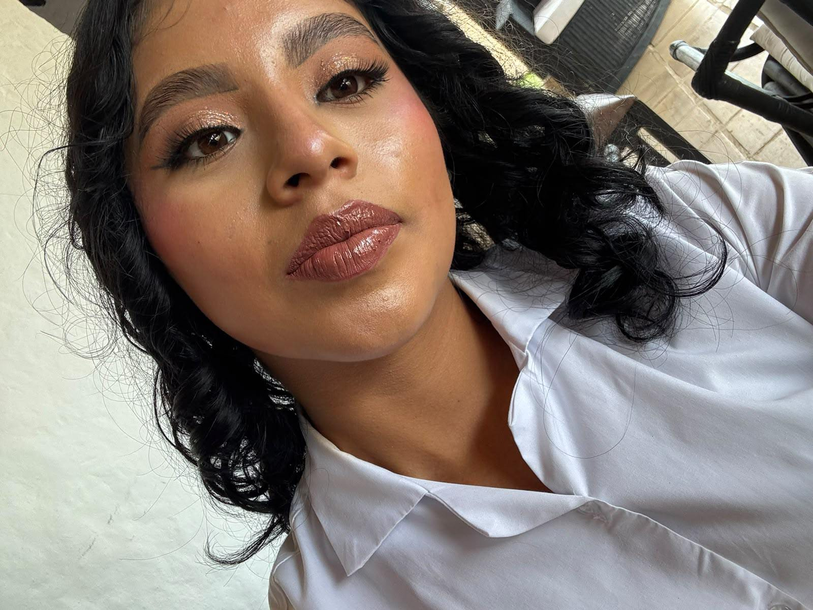

🎓 Aspiraciones educativas
Mi aspiración es estudiar Contaduría Pública, profundizar mis conocimientos en contabilidad, finanzas y administración, y prepararme para ejercer mi profesión con responsabilidad.

Tarjeta de presentación académica
Estudiante · Con aspiraciones en Contaduría Pública
¡Hola! Soy estudiante y me entusiasma aprender, desarrollar nuevas habilidades y poner mis conocimientos al servicio de proyectos con impacto. Este espacio reúne mis metas, intereses y áreas de exploración académica.
Mi aspiración es estudiar Contaduría Pública, profundizar mis conocimientos en contabilidad, finanzas y administración, y prepararme para ejercer mi profesión con responsabilidad.
Me interesa aprender a utilizar herramientas tecnológicas que faciliten el trabajo contable, como Excel, programas de contabilidad y sistemas de facturación electrónica. También me llama la atención el análisis de datos.
Contabilidad y finanzas, Asministraciòn de empresas, Economìa y matemàticas, Emprendimiento y Gestiòn empresarial.
Me gusta aprender cosas nuevas, desarrollar ideas de negocio, conocer sobre educación financiera, trabajar en equipo y adquirir conocimientos que me ayuden a crecer personal y académicamente.